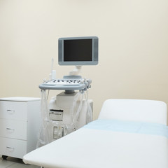
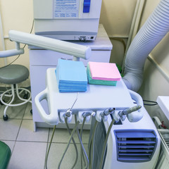

施設・設備のご案内
当院では患者さまの負担を軽減する医療機器を導入しております。
最新の検査機器、安心できる技術で、皆様の健康をお守りします。
医療機器・設備のご紹介
当院はさまざまな医療機器を備え、診断・治療を正確に行います。
最新の技術による正確な診断と、より負担をかけない検査を心がけています。
施設のご紹介
最新治療器
HORIZON／TOYO MEDIC
DXA法（デキサ法；二重エネルギーX線吸収測定法）は、２種類のエネルギーレベルのX線の透過率の差を利用して測定する精度が高い骨密度検査法です。測定時間は、腰椎約１分、大腿骨頸部片側約１分、全身約６分と比較的短く、放射線の被ばく量（実効線量等量）は、一番被ばく量の多い全身測定でも胸部X線撮影時の約1／10とわずかです。

超音波治療器
UST-770／ITO
筋・腱・靭帯など、損傷を受けた軟部組織を効果的に治療します。
超音波が生体組織に照射される際に生じる熱で、温熱作用を発生させ、超音波が到達している範囲を立体的に温めることができます。
炎症の早期発見に有用
自動血球数CRP測定装置
赤血球、白血球、血小板や炎症タンパク質などの測定を行う装置です。
採血後、1時間ほどで測定でき、その日のうちに測定結果のお知らせが可能です。

血液による疾患の自動分析
生化学自動分析装置
主に腎機能や肝機能を測定する装置です。
リウマチ、痛風などの疾患をその日のうちに測定できます。